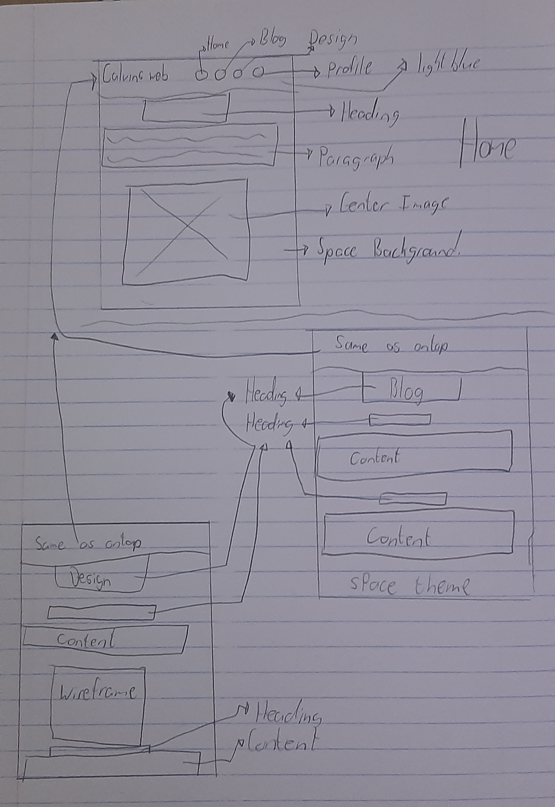
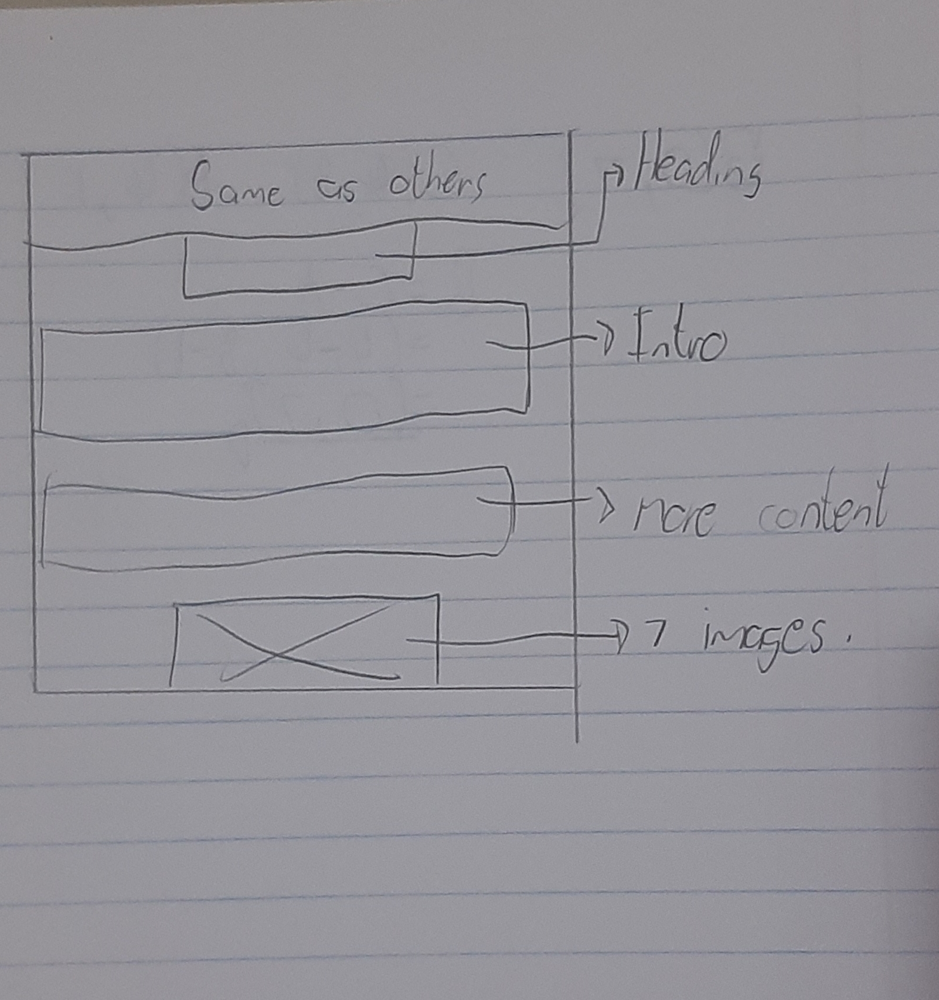

For this website i decided to use a space theme as i thought it would be a cool theme to use through out the site i tried to incorporate all colors that would be seen in space but i decided to stick mostly with blue, black and white it was interesting process designing the site.
 personally the whole assignment ws not that bad i think ive gotten really use to coding and using the lecture as a guide helped me aloy in the coding of the website. I realised that im still use to styling in HTML like we use to do in school so it was a challange to remind myself that i had to make a Css folder in order to do this. The use of images are really cool and i found that the best method for myself was to use and image in the image folder and it is more secure and i am less likly to make mistakes as the image is thier for use.
I also realise that black text was goning to be unseen with my background so i made the text white and tried to give the text a blury background so it stood out and was easily readable by the audience. i also struggled with the back ground image as i had alot of images for the portfolio section and it extended really far down but the other sections didnt have as much length so i made the background long for all sections so it didnt look as wierd.
i found being creative to be really hard and so i just decided to go with a design or concept that i like. i basically first chose a theme and then just based everything off of that theme as it seemed llike the best option for myself. i realised that when it comes to color and creativity i struggle alot but when except when it comes to stuff like drawing figures, weapons and people as they are basically just shapes without color. i tried to stick to a matching range of color so i chose blue, black and white and tried to use it wherever i needed.